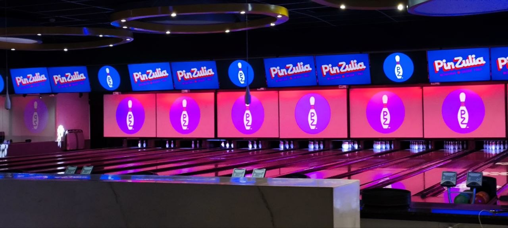
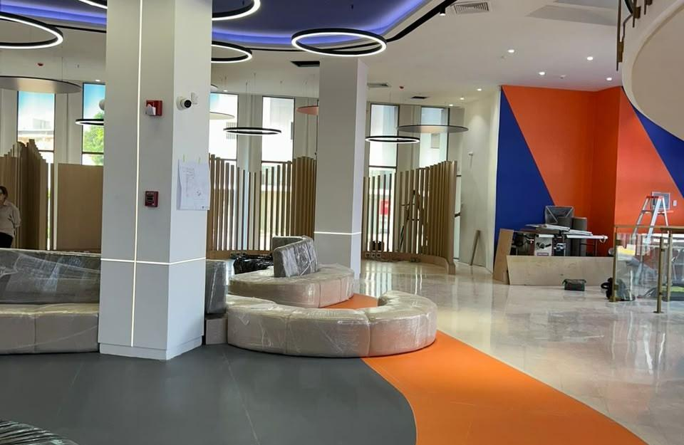
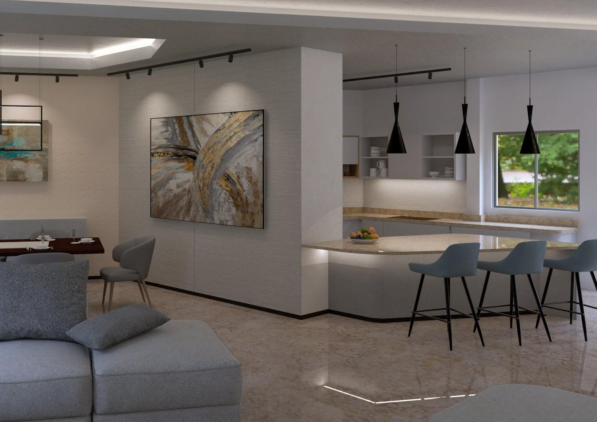
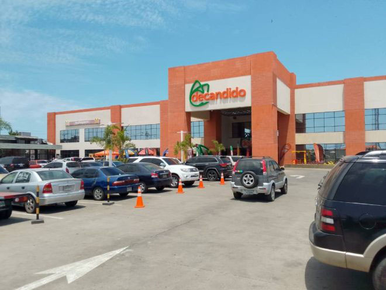
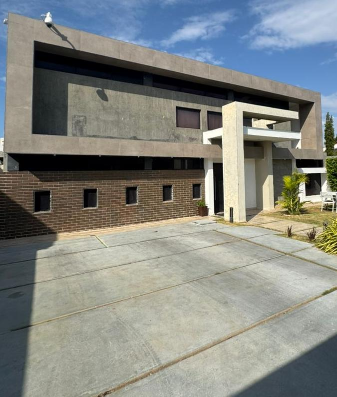
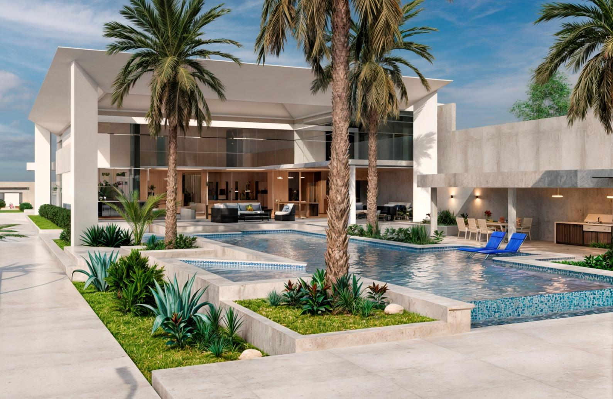
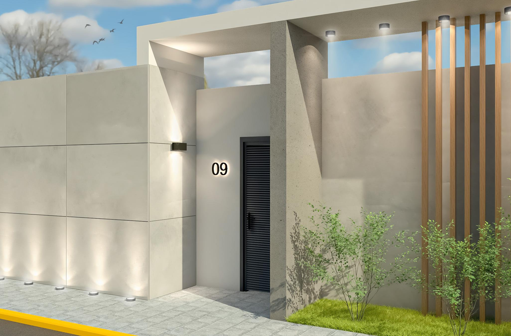
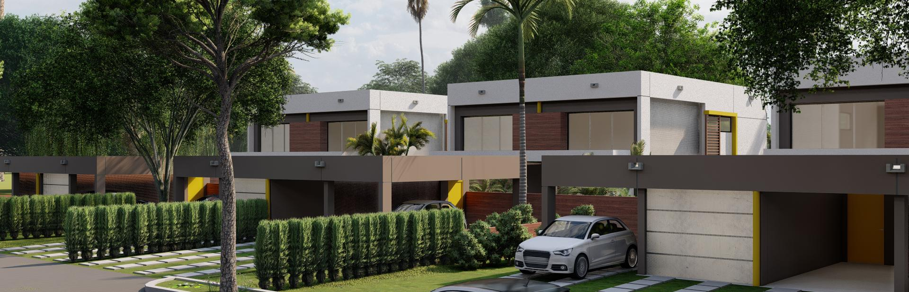

Diseño arquitectónico
Desarrollo de propuestas para viviendas y espacios comerciales, desde la organización funcional hasta la expresión formal.
↗ARQUITECTURA · DISEÑO · VISUALIZACIÓN 3D
Diseño y visualización arquitectónica para transformar ideas en espacios funcionales, atractivos y hechos a tu medida.
Soy el MSc. Jesús Miguel Lugo Gotopo, arquitecto especializado en diseño e innovación, modelado tridimensional y visualización arquitectónica.
Combino creatividad, criterio técnico y atención al detalle para desarrollar propuestas que equilibran estética y funcionalidad. Desde una idea inicial hasta una remodelación o una presentación visual, te acompaño para encontrar soluciones adaptadas a cada proyecto.
Conversemos sobre tu idea ↗Un enfoque versátil para ayudarte a visualizar, diseñar y mejorar espacios residenciales y comerciales.
Desarrollo de propuestas para viviendas y espacios comerciales, desde la organización funcional hasta la expresión formal.
↗Renovación de interiores, fachadas y negocios para actualizar su imagen, mejorar su uso y aprovechar mejor cada espacio.
↗Representaciones visuales para comprender volúmenes, materiales, iluminación y atmósferas antes de construir.
↗Recorridos visuales que permiten presentar y comunicar la intención espacial de una propuesta con mayor claridad.
↗Los siguientes paquetes son una guía inicial. El alcance final se adapta al tipo de espacio, la información disponible y los objetivos de cada cliente.
Para dar forma a una idea y explorar posibilidades.
Para entender y comunicar una propuesta antes de ejecutarla.
Para presentar la propuesta con un relato visual más completo.
Cada proyecto se cotiza de forma personalizada. Los servicios y entregables definitivos se confirman durante la consulta inicial.
Selecciona cualquier proyecto para abrir una ficha independiente con más imágenes, contexto y detalles del trabajo.

↗Maracaibo, Venezuela · Remodelación y visualización

↗Maracaibo, Venezuela · Diseño y propuesta espacial

↗Maracaibo, Venezuela · Diseño, modelado y renderizado en colaboración

↗Cabimas, Venezuela · Modelado y renderizado

↗Maracaibo, Venezuela · Modelado 3D, renders y planos de anteproyecto

↗Maracaibo, Venezuela · Modelado, renderizado y animación

↗Santa Ana de Coro, Venezuela · Modelado, renderizado y animación

↗Florida, Estados Unidos · Modelado, renderizado y animación en colaboración
La comunicación y la claridad en cada etapa ayudan a que la propuesta responda a tus necesidades reales.
Conversamos sobre tus necesidades, referencias, objetivos y condiciones del proyecto.
Definimos el alcance y desarrollamos una solución coherente con lo que buscas.
Convertimos la propuesta en recursos gráficos y visuales que faciliten su comprensión.
Acordamos los entregables y el formato final según los objetivos definidos al inicio.
Si necesitas una orientación más específica, escríbeme y revisamos tu caso.
Preguntar por WhatsApp ↗Sí. Mi experiencia incluye propuestas de vivienda, remodelaciones comerciales, interiores y proyectos de entretenimiento.
Sí. Podemos conversar sobre un servicio específico de modelado, renderizado o animación, según la información y los archivos disponibles.
La cotización depende del tipo de proyecto, su complejidad, el alcance y los entregables. Escríbeme con una breve descripción para revisar tus necesidades.
Si los tienes, puedes compartir medidas, planos existentes, fotografías, referencias visuales, ubicación y una idea de lo que deseas lograr.
Sí. Puedo colaborar en propuestas para renovar viviendas, fachadas, interiores y locales comerciales. El alcance técnico de cada encargo se define en la consulta inicial.
Cuéntame qué tienes en mente. Hablemos de tus objetivos y encontremos una forma de llevar tu proyecto al siguiente nivel.
MSc. Jesús Lugo Arq. Esp.
ARQUITECTURA · VISUALIZACIÓNDiseño que conecta ideas con espacios.